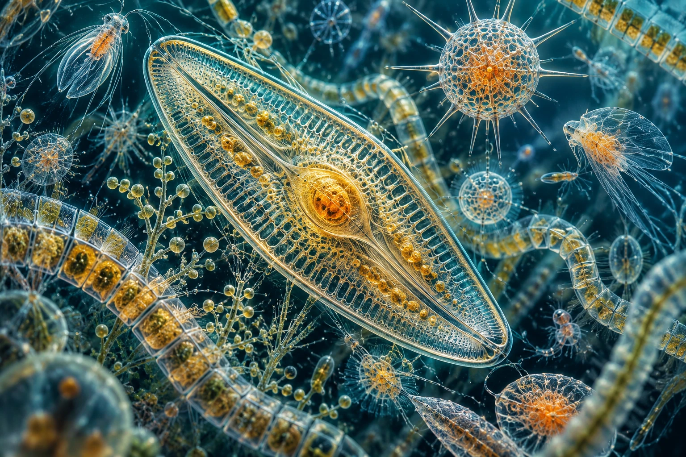

AN IMAGINED MICROSCOPIC OCEAN
Worlds within water.
Glass-like shells. Living light.
A universe held in a drop.

THE COMPLETE COMPOSITIONFull composition
AN IMAGINED MICROSCOPIC OCEAN
Glass-like shells. Living light.
A universe held in a drop.

THE COMPLETE COMPOSITION